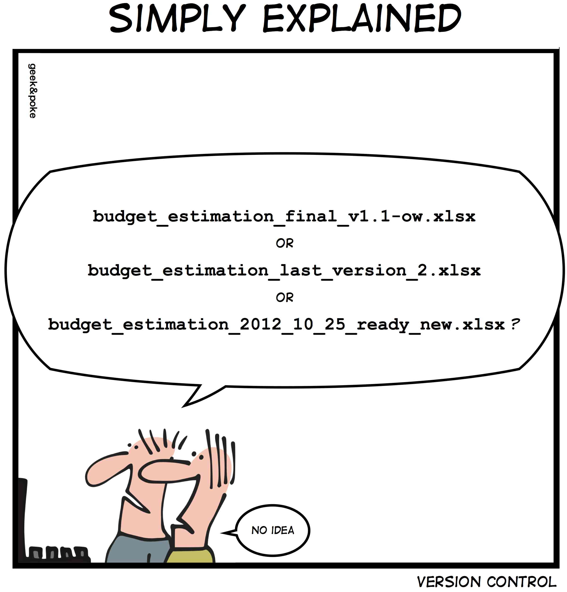

Version control for data science & machine learning with DVC
Content from the webinar slides for easier browsing.
On version control
I won’t introduce here the benefits of using a good version control system such as Git.

Extending Git for data
While Git is a wonderful tool for text files versioning (code, writings in markup formats), it isn’t a tool to manage changes to datasets.
Several open source tools—each with a different structure and functioning—extend Git capabilities to track data: Git LFS, git-annex, lakeFS, Dolt, DataLad.
Git for models and experiments
Reproducible research and collaboration on data science and machine learning projects involve more than datasets management:
Experiments and the models they produce also need to be tracked.
Many moving parts
*hp = hyperparameter
How did we get performance17 again? 🤯
Enters DVC
DVC principles
Large files (datasets, models…) are kept outside Git.
Each large file or directory put under DVC tracking has an associated .dvc file.
Git only tracks the .dvc files (metadata).
Workflows can be tracked for collaboration and reproducibility.
DVC functions as a Makefile and allows to only rerun what is necessary.
Installation
For Linux (other OSes, refer to the doc):
pip:pip install dvccondapipx (if you want
dvcavailable everywhere without having to activate virtual envs):pipx install dvc
Optional dependencies [s3], [gdrive], etc. for remote storage.
How to run
Multiple options:
Terminal:
dvc ...Python library if installed via
piporconda:import dvc.api
In this webinar, I will use DVC through the command line.
Acknowledgements
Code and data for this webinar modified from:
The project
tree -L 3├── LICENSE
├── data
│ ├── prepared
│ └── raw
│ ├── train
│ └── val
├── metrics
├── model
├── requirements.txt
└── src
├── evaluate.py
├── prepare.py
└── train.pyInitialize Git repo
git initInitialized empty Git repository in dvc/.git/This creates the .git directory.
git statusOn branch main
No commits yet
Untracked files:
LICENSE
data/
requirements.txt
src/Initialize DVC project
dvc initInitialized DVC repository.
You can now commit the changes to git.You will also see a note about usage analytics collection and info on how to opt out.
A .dvc directory and a .dvcignore file got created.
Commit DVC system files
DVC automatically staged its system file for us:
git statusOn branch main
No commits yet
Changes to be committed:
new file: .dvc/.gitignore
new file: .dvc/config
new file: .dvcignore
Untracked files:
LICENSE
data/
requirements.txt
src/So we can directly commit:
git commit -m "Initialize DVC"Prepare repo
Let’s work in a virtual environment:
# Create venv and add to .gitignore
python -m venv venv && echo venv > .gitignore
# Activate venv
source venv/bin/activate
# Update pip
python -m pip install --upgrade pip
# Install packages needed
python -m pip install -r requirements.txtClean working tree
git add .gitignore LICENSE requirements.txt
git commit -m "Add general files"
git add src
git commit -m "Add scripts"git statusOn branch main
Untracked files:
data/Now, it is time to deal with the data.
Tracking data with DVC
Put data under DVC tracking
We are still not tracking any data:
dvc statusThere are no data or pipelines tracked in this project yet.You can choose what to track as a unit (i.e. each picture individually, the whole data directory as a unit).
Let’s break it down by set:
dvc add data/raw/train
dvc add data/raw/valThis adds data to .dvc/cache/files and created 3 files in data/raw:
.gitignoretrain.dvcval.dvc
The .gitignore tells Git not to track the data:
cat data/raw/.gitignore/train
/valThe .dvc files contain the metadata for the cached directories.
Tracked data
We are all good:
dvc statusData and pipelines are up to date.Data (de)duplication
Link between checked-out version of a file/directory and the cache:
| Duplication | Editable | |
|---|---|---|
| Reflinks* | Only when needed | Yes |
| Hardlinks/Symlinks | No | No |
| Copies | Yes | Yes : Cache ⟷ working directory {tbl-colwidths=“[44, 28, 28]”} |
*Reflinks only available for a few file systems (Btrfs, XFS, OCFS2, or APFS).
Commit the metafiles
The metafiles should be put under Git version control.
You can configure DVC to automatically stage its newly created system files:
dvc config [--system] [--global] core.autostage trueYou can then commit directly:
git commit -m "Initial version of data"
git statusOn branch main
nothing to commit, working tree cleanTrack changes to the data
Let’s make some change to the data:
rm data/raw/val/n03445777/ILSVRC2012_val*Remember that Git is not tracking the data:
git statusOn branch main
nothing to commit, working tree cleanBut DVC is:
dvc statusdata/raw/val.dvc:
changed outs:
modified: data/raw/valAdd changes to DVC
dvc add data/raw/val
dvc statusData and pipelines are up to date.Now we need to commit the changes to the .dvc file to Git:
git statusOn branch main
Changes to be committed:
modified: data/raw/val.dvcStaging happened automatically because I have set the autostage option to true on my system.
git commit -m "Delete data/raw/val/n03445777/ILSVRC2012_val*"Check out older versions
What if we want to go back to the 1st version of our data?
For this, we first use Git to checkout the proper commit, then run dvc checkout to have the data catch up to the .dvc file.
To avoid forgetting to run the commands that will make DVC catch up to Git, we can automate this process by installing Git hooks:
dvc installNow, all we have to do is to checkout the commit we want:
git log --oneline94b520b (HEAD -> main) Delete data/raw/val/n03445777/ILSVRC2012_val*
92837a6 Initial version of data
dd961c6 Add scripts
db9c14e Initialize repo
7e08586 Initialize DVCgit checkout 92837a6The version of the data in the working directory got automatically switched to match the .dvc file:
dvc statusData and pipelines are up to date.You can look at your files to verify that the deleted files are back.
Git workflows
git checkout is ok to have a look, but a detached HEAD is not a good place to create new commits.
Let’s create a new branch and switch to it:
git switch -c alternativeSwitched to a new branch 'alternative'Going back and forth between both versions of our data is now as simple as switching branch:
git switch main
git switch alternativeCollaboration
Classic workflow
The Git project (including .dvc files) go to a Git remote (GitHub/GitLab/Bitbucket/server).
The data go to a DVC remote (AWS/Azure/Google Drive/server/etc.).
DVC remotes
DVC can use many cloud storage or remote machines/server via SSH, WebDAV, etc.
Let’s create a local remote here:
# Create a directory outside the project
mkdir ../remote
# Setup default (-d) remote
dvc remote add -d local_remote ../remoteSetting 'local_remote' as a default remote.cat .dvc/config[core]
remote = local_remote
['remote "local_remote"']
url = ../../remoteCommit remote config
The new remote configuration should be committed:
git statusOn branch alternative
Changes not staged for commit:
modified: .dvc/configgit add .
git commit -m "Config remote"Push to remotes
Let’s push the data from the cache (.dvc/cache) to the remote:
dvc push2702 files pushedWith Git hooks installed, dvc push is automatically run after git push.
(But the data is pushed to the DVC remote while the files tracked by Git get pushed to the Git remote).
By default, the entire data cache gets pushed to the remote, but there are many options.
Example: only push data corresponding to a certain .dvc files.
dvc push data/raw/val.dvcPull from remotes
dvc fetch downloads data from the remote into the cache. To have it update the working directory, follow by dvc checkout.
You can do these 2 commands at the same time with dvc pull.
Tracking experiments
DVC pipelines
DVC pipelines create reproducible workflows and are functionally similar to Makefiles.
Each step in a pipeline is created with dvc stage add and add an entry to a dvc.yaml file.
dvc stage add options:
-n: name of stage
-d: dependency
-o: output
Each stage contains:
cmd: the command executeddeps: the dependenciesouts: the outputs
The file is then used to visualize the pipeline and run it.
Example
Let’s create a pipeline to run a classifier on our data.
The pipeline contains 3 steps:
- prepare
- train
- evaluate
Create a pipeline
1st stage (data preparation)
dvc stage add -n prepare -d src/prepare.py -d data/raw \
-o data/prepared/train.csv -o data/prepared/test.csv \
python src/prepare.pyAdded stage 'prepare' in 'dvc.yaml'2nd stage (training)
dvc stage add -n train -d src/train.py -d data/prepared/train.csv \
-o model/model.joblib \
python src/train.pyAdded stage `train` in 'dvc.yaml'3rd stage (evaluation)
dvc stage add -n evaluate -d src/evaluate.py -d model/model.joblib \
-M metrics/accuracy.json \
python src/evaluate.pyAdded stage `evaluate` in 'dvc.yaml'Commit pipeline
git commit -m "Define pipeline"prepare:
changed deps:
modified: data/raw
modified: src/prepare.py
changed outs:
deleted: data/prepared/test.csv
deleted: data/prepared/train.csv
train:
changed deps:
deleted: data/prepared/train.csv
modified: src/train.py
changed outs:
deleted: model/model.joblib
evaluate:
changed deps:
deleted: model/model.joblib
modified: src/evaluate.py
changed outs:
deleted: metrics/accuracy.json
[main 4aa331b] Define pipeline
3 files changed, 27 insertions(+)
create mode 100644 data/prepared/.gitignore
create mode 100644 dvc.yaml
create mode 100644 model/.gitignoreVisualize pipeline in a DAG
dvc dag+--------------------+ +------------------+
| data/raw/train.dvc | | data/raw/val.dvc |
+--------------------+ +------------------+
*** ***
** **
** **
+---------+
| prepare |
+---------+
*
*
*
+-------+
| train |
+-------+
*
*
*
+----------+
| evaluate |
+----------+Run pipeline
dvc repro'data/raw/train.dvc' didn't change, skipping
'data/raw/val.dvc' didn't change, skipping
Running stage 'prepare':
> python src/prepare.py
Generating lock file 'dvc.lock'
Updating lock file 'dvc.lock'
Running stage 'train':
> python src/train.py
Updating lock file 'dvc.lock'
Running stage 'evaluate':
> python src/evaluate.py
Updating lock file 'dvc.lock'
Use `dvc push` to send your updates to remote storage.dvc repro breakdown
dvc reproruns thedvc.yamlfile in a Makefile fashion.First, it looks at the dependencies: the data didn’t change.
Then it ran the commands to produce the outputs (since it is our first run, we had no outputs).
When the 1st stage is run, a
dvc.lockis created with information on that part of the run.When the 2nd and 3rd stages are run,
dvc.lockis updated.At the end of the run
dvc.lockcontains all the info about the run we just did (version of the data used, etc.).A new directory called
runsis created in.dvc/cachewith cached data for this run.
Results of the run
The prepared data was created in
data/prepared(with a.gitignoreto exclude it from Git—you don’t want to track results in Git, but the scripts that can reproduce them).A model was saved in
model(with another.gitignorefile).The accuracy of this run was created in
metrics.
Clean working tree
Now, we definitely want to create a commit with the dvc.lock.
We could add the metrics resulting from this run in the same commit:
git add metrics
git commit -m "First pipeline run and results"Our working tree is now clean and our data/pipeline up to date:
git statusOn branch alternative
nothing to commit, working tree cleandvc statusData and pipelines are up to date.Modify pipeline
From now on, if we edit one of the scripts, or one of the dependencies, dvc status will tell us what changed and dvc repro will only rerun the parts of the pipeline to update the result, pretty much as a Makefile would.
Going further … next time
DVC is a sophisticated tool with many additional features: